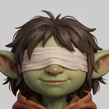

A quiet walk for a new mage and a blind goblin.
Nothing here can hurt you and there is no clock. Walk, read, pick things up. Each place holds a gem for your spiral pendant, and each gem opens the way to the next place.
| W A S D / Arrows | Walk and turn |
| Mouse | Click the view to look about (Esc lets go) |
| Shift | Hurry |
| E / Space | Use, read, continue |
| H | Ask Fray what to do next |
| J | Journal: pendant, stories, keepsakes |
| P / Esc | Pause |
Fray can go where you cannot. Find a goblin-sized way in, send her, and call directions: she tells you what she feels, and whether the hum is getting warmer.
Touch: left thumb walks, right thumb looks, ✋ uses. Gamepad: sticks, A to use, X for a hint, Y for the journal.
Built with three.js r165. Paintings, textures and icons made with fal (Nano Banana 2). Fray, Grandfather Lichen, Elder Grusk and the props are 3D models made with Meshy from those paintings. Music, ambience, sound effects and every voice made with ElevenLabs.
Written and put together by Claude for the web-games-andrew collection.